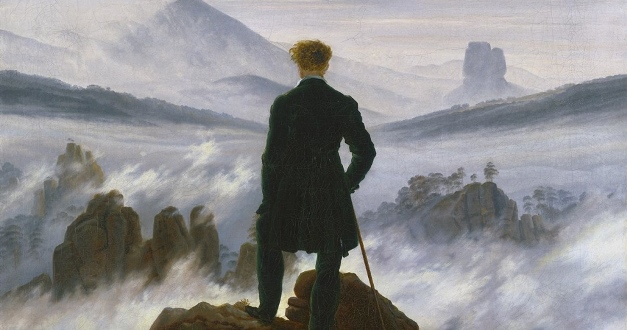

Jornada do Zero a Primeira Vaga
Dezembro de 2022
Um pouco da minha história.

Sempre fui uma criança muito curiosa e agitada nas coisas, mas uma
coisa que sempre me chamava a atenção era o mundo (como o planeta
Terra). O jeito que as coisas funcionam juntas para uma direção
contínua e como os processos acabam e retomam a cada instante incitava
minha imaginação e fazia surgir mais e mais curiosidades sobre as
coisas. Então, ao concluir o ensino médio sem muita maturidade e
pressão externa, decidi me formar em Biologia, pois parecia ser o mais
próximo das coisas que eu gostava há algum tempo. Entrei e me formei
pelo Instituto Federal de São Paulo em Licenciatura em Ciências
Biológicas, trabalhei um pouco na área, porém percebi que não era o
que eu realmente buscava...
Janeiro de 2023
Conhecendo a Programação
Sempre tive muito contato com a programação através de amigos e
conhecidos próximos. Isso já instigava minha curiosidade sobre como
funcionava essa "comunicação" entre máquina e ser humano. Então, aos
poucos, fui pesquisando onde estudar, mas sempre caía no dilema se
estava estudando da maneira correta ou começando pelo lugar certo.
20 de Março de 2023
Conhecendo a RocketSeat, consegui ter mais foco e estabelecer uma
rotina de estudos para programação. Isso me auxiliou na sequência de
conteúdos que eu não havia encontrado em outros lugares. Enfim,
realizei esse projeto para aprimorar minha experiência em frontend e
desenvolver com mais confiança. Espero voltar a este site no futuro e
poder adicionar a conquista da minha primeira vaga como desenvolvedor.